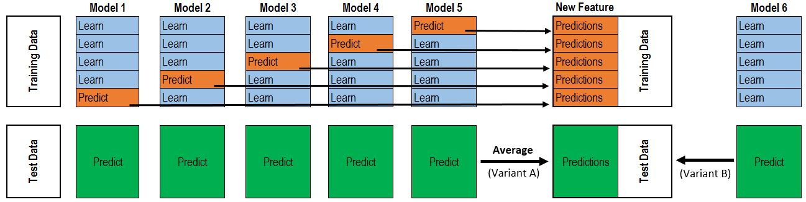

Unity is strength.
Ensemble methods combine multiple learning algorithms to obtain better predictive performance than any of the constituent learning algorithms alone.
The main hypothesis is that when weak learning algorithms (weak learners) are correctly combined, we can obtain more accurate and/or robust models.
Most of the time, these weak learners perform not so well by themselves either because they have a high bias or variance. Then, the idea of ensemble methods is to try reducing bias and/or variance of such weak learners by combining several of them to create a strong learner with better performances.
Rule of Thumb
Homogeneous weak learners: Bagging and boosting utilize a single base learning algorithm so that we have homogeneous weak learners trained in different ways (different data, different random state but same hyper-parameter). The ensemble model we obtain is then said to be “homogeneous”.
Heterogeneous weak learners: Stacking uses different types of base learning algorithms. Some heterogeneous weak learners are then combined into a “heterogeneous” ensembles model.
The choice of weak learners should be coherent with the way we aggregate these models. If we choose base models with low bias but high variance, it should be with an ensemble method that tends to reduce variance, and vice versa.
Bagging
Bagging (bootstrap aggregating) is an ensemble method that often considers homogeneous weak learners and learns them independently from each other in parallel. It then combines weak learners following some deterministic averaging process as below:
$$\hat{f}_{b a g}=\left\{\begin{array}{ll}{\frac{1}{B} \sum_{b=1}^{B} \hat{f}^{b}(x)} & {\text { for Regression Problems }} \\ {\underset{b=1 \ldots B}{\arg \max } \hat{f}^{b}(x)} & {\text { for Classification Problems }}\end{array}\right.$$Bagging is designed to improve the stability and reduces variance to avoid overfitting. The base learner it contains is supposed to be the one with low bias but high variance.
Why does bagging reduce the variance?
Assume that $Y_{1}, Y_{2}, \ldots, Y_{n}$ represent the predictions of each weak learner and they are random variables with variance $\sigma^{2}$. If each weak learner is trained on independent training set drawn from the true unknown underlying distribution, then $Y_{1}, Y_{2}, \ldots, Y_{n}$ are i.d.d.. Then the variance of their average (i.d.d. random variables) is:
$$\operatorname{Var}\left(\frac{Y_{1}+Y_{2}+\ldots+Y_{n}}{n}\right)=\operatorname{Var}\left(\frac{Y_{1}}{n}\right)+\ldots+\operatorname{Var}\left(\frac{Y_{n}}{n}\right)=\frac{\sigma^{2}}{n}$$, which means that the variance decreases from $\sigma^{2}$ to $\frac{\sigma^{2}}{n}$ (while the average does not change).
However, there is one problem here - we do not have access to multiple training data sets. Instead, we can bootstrap by taking repeated samples from the initial training data set.
Bootstrapping
In statistics, bootstrapping is any test or metric that relies on random sampling with replacement on the initial dataset.
There two hypotheses proposed in Bootstrapping.
- First, the size $N$ of the initial dataset should be large enough to capture most of the complexity of the true unknown underlying distribution so that sampling from the dataset is a good approximation of sampling from the real distribution (representativity).
- Second, the size $N$ of the dataset should be large enough compared to the size $B$ of the bootstrap samples so that samples are not too much correlated (independence).
Under these hypotheses above, these bootstrapped training data sets can be seen as being drawn both directly from the true unknown underlying distribution. So, they can be considered as approximately representative and independent (almost i.i.d.) samples of the true data distribution.
Out-of-Bag (OOB) Error
OOB error is the mean prediction error on each training sample $x_i$, using only the weak learners that did not have $x_i$ in their bootstrap samples.
One big advantage of bagging is that we can compute testing error without any cross-validation by computing OOB error. The resulting OOB error is a valid estimate of the test error for the bagged model, since the response for each observation is predicted using only the trees that were not fit using that observation.
Bagging in tree model
Bagging works particularly well for decision trees when they are aggregated as Random forest.
Boosting
Boosting is an ensemble method that often considers homogeneous weak learners and learns them from previously learned weak learners in sequential.
Boosting is designed to improve the stability and reduces bias to avoid underfitting. The base learner it contains is supposed to be the one with low variance but high bias.
Why does boosting reduce the bias?
In contrast, boosting does not involve bootstrapping. Instead, the weak learner is sequentially fitted on a modified (weighted) version of the original data set.
The fitting process is adaptative: each learner is fitted giving more importance to observations in the dataset that were badly handled by the previous learners.
Intuitively, each new learner focus its efforts on the most difficult observations to fit up to now, so that we obtain, at the end, a strong learner with lower bias.
Boosting in tree model
Boosting works particularly well for decision trees when they are aggregated as Boosted trees.
Stacking
Stacking (also called meta ensembling) is a model ensembling technique that often considers heterogeneous weak learners and learns them independently from each other in parallel.
Stacked model will outperform each of the individual model due its ability to highlight each base model where it performs best and discredit each base model where it performs poorly. For this reason, stacking is most effective when the base models are significantly different.
So intuitively, stacking will ideally reduce both bias and variance, but it’s especially efficient at preventing overfitting and variance.
Algorithm
- First, all of weak learners are trained using the available data.
- Then, a combiner algorithm (meta-model) is trained to make a final prediction using all the predictions of the weak learners as inputs.
If an arbitrary combiner algorithm is used, then stacking can theoretically represent any of the ensemble techniques. In practice, a logistic regression model is often used as the combiner.
When we train stacked models:
- In order to prevent data leakage, we should make sure that the data having been used for the training of the weak learners will not be used again for the training of the meta-model.
- And to make more efficient use of data, k-folds cross-training approach can be adopted to train the model, which can be shown as the figure below.
- Train each weak learner on $k-1$ folds and make predictions on the remaining fold, and do it iteratively to obtain predictions for all observations.
- Then train our meta-model on all these predictions.

Multi-levels Stacking
A possible extension of stacking is multi-level stacking. It consists in doing stacking with multiple layers.
We should also mention that adding levels can either be data expensive (if k-folds like technique is not used) or time expensive (if k-folds like technique is used).
Reference
Blog: Ensemble methods: bagging, boosting and stacking
Kaggle: Stacked Regressions to predict House Prices
Kaggle: Introduction to Ensembling/Stacking in Python
Guide to Model Stacking (i.e. Meta Ensembling)